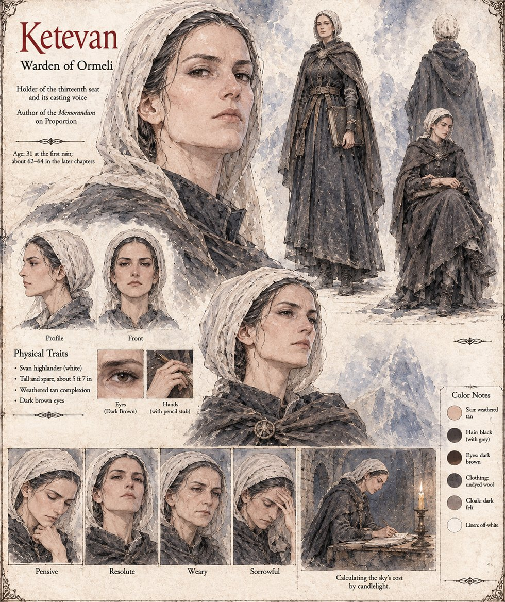

Ketevan
Warden of Ormeli, holder of the thirteenth seat and its casting voice · author of the Memorandum on Proportion · keeper of the ledger · 31 at the first rain, 64 at the last
A woman of thirty-one when the manuscript meets her, widowed since her husband Davit fell from the upper terrace mending a wall she had told him, in writing, was not worth the mending. She holds the tower of Ormeli, the highest and poorest of the thirteen valleys of Vashkeni, and carried herself like a ledger: upright, ruled, and closed at the margins. Every night, by one candle and not two, she enters the valley’s water in three columns, carried, drunk, lost; she tests the household’s first bread herself; she has never seen the sea. On the eleventh of Ferren, in the third dry summer, a lame fletcher asks at her gate for bread. By the Hearth Law of Elara a stranger at a lit hearth is the Mother’s guest, so she adds a tenth mouth to nine, gives him the larger bowl and pretends she has already eaten. On the fourth morning she meets him in the yard with the long bundle he has left, and he tells her to keep it until someone asks for it. He never comes back. She counts the arrows twice, the bands on the limb once, and writes in her ledger: Received of a guest: one bow, thirteen arrows. Value unknown. Owed: bread.
When her nine-year-old daughter Nestan takes the bow down and asks it for a little rain for her dog, Ketevan finds the spent arrow standing upright in the wet barley, its seed gone from milk to chalk. Did you ask for it? — Only a little. She takes that for what it is, a unit of measure, and rules a fourth column in the ledger headed Taken from, which she leaves empty because she does not yet know whose account the rain has left. At Samaghvto she is handed a dead arrow in a velvet case and the thirteenth seat’s casting voice, which the Hierarchs think a delicious joke. In the fourteenth year, after the plain starves, she writes eleven pages, the Memorandum on Proportion, whose argument fits on one line: the sky answers in proportion to the picture, and the account falls due elsewhere. Hierarch Gurgen files it in a cedar drawer. Mzia tells her the Mother is not a pot to be rationed, and she answers that somebody has been measuring for her. She casts the voice fourteen times in twenty-eight years, always for the smaller thing, and returns every gift the Hierarchs send. She stops once at the fletcher’s stall at the Wine Gate and is told I make arrows before she can ask a question; she walks on without buying and passes the stall every Iverin after.
In the twenty-ninth year the Council divides six and six over King Mirdat’s plea for rain, and she casts the voice for the whole price she knows it will cost: Yes. An hour before the shot she finds the young king pacing the court and tells him Think of one field, Majesty. Only one. He pictures one field, then a kingdom; the rain falls nine days on the whole plain, the Ladzhura rises and takes four hundred and six, and the Mother’s four valleys go dry the same season. The war follows. In the thirty-first year she refuses by letter to give the Fourth Crown her blessing (The voice is not for sale. It was never mine to give), and the king answers with a snow meant to last ten days, which kills two hundred and eleven in her own valley. She carries the dead arrow down to him in a barley sack and asks him to stop it; I cannot, he says. I pictured ten days. She walks back up the mountain with a spade, enters each of the dead herself, by name, and writes the voice into the ledger as surrendered. Given for nothing. Taken from: the one who held it. At the Rite of the Fourth Crown she rises, the only time in forty years she has risen unasked, and says That is year thirteen. Her three letters to the king that famine year are opened first by Gurgen and put in the cedar drawer.
Her daughter, forty-one, walks eleven days to Samaghvto to ask the sky to give less, and dies of the heat in the shade of the Hall’s north wall. When the news comes Ketevan writes Nestan, daughter of Ketevan, aged forty-one. Asked: a little. Given: all of it. and for the first time in thirty-two years leaves the Taken from column empty, writing neither none nor me. The dying king sends for her by royal post and she rides nine days on relay horses at sixty-four; he asks why the sky obeyed him, and she answers that it obeys everyone: It was never listening to the crown. It was listening to your hand. He gives her the wooden spoon his mother carried, and she gives it to the kitchens. She lives seven years more, never rules the fourth column again, gives the first bread of each spring to anyone who asks, and dies in the fortieth year on the highest terrace in the shade of the fourth wall. She never sees the sea.
The manuscript gives her ages (31 at the first rain, a grey-haired woman of sixty at the Mercy Vote, sixty-four at the last), her ruled and closed bearing, her pencil stub and her one candle. The sheet’s tall, spare build of about 5 ft 7 in, weathered tan complexion, dark brown eyes, black hair with grey under an off-white linen headcloth, undyed-wool dress and dark felt cloak are its own, as are its panels Pensive, Resolute, Weary and Sorrowful and its scene Calculating the sky’s cost by candlelight. Its title lines (Holder of the thirteenth seat and its casting voice, Author of the Memorandum on Proportion) and its age of about 62–64 in the later chapters follow the manuscript. Her daughter Nestan, King Mirdat and Hierarch Gurgen have no sheets in this case and so no pages here.
“That is year thirteen.”